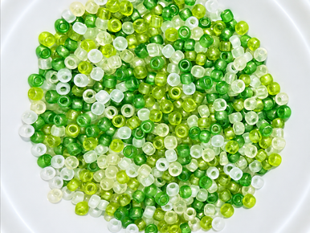
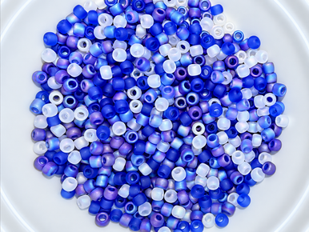
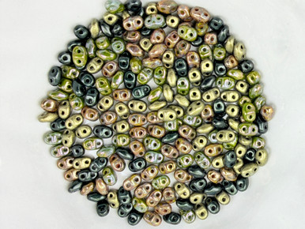

Artbeads Designer Keylime 8\0 Round TOHO Blend
Green and frosted-white TOHO seed bead blend, in size 8/0.
View official product ↗THE MAKER’S TABLE
Explore three bead blends, build a materials list, and take a better-prepared project to the official store.

Three real references. Confirm options, prices and availability at the official store.
Green and frosted-white TOHO seed bead blend, in size 8/0.
View official product ↗
A size 8/0 TOHO mix with blue, lavender and frosted-white tones.
View official product ↗
MiniDuo blend in earthy greens, charcoal and warm metallic tones.
View official product ↗YOUR LOCAL SHORTLIST
Your selection stays in this browser. It does not reserve products or submit orders.
The catalog separates beads, findings, wire, tools and kits.
The Design Studio provides jewelry tutorials and technique resources.
The three selected blends have different colors and bead formats; they are not interchangeable by default.